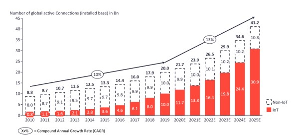

Desde su implementación, el IoT, ha sido un completo éxito, revolucionando por completo el sistema de datos en relación al mundo real.

Evolución del número de dispositivos conectados desde el 2010.
Nadie era capaz de imaginarse que se pudieran obtener todos los datos de, por ejemplo, una tostadora, ni mucho menos que se pudiera hacer su mantenimiento a distancia.
¿Quieres saber cómo surgió y hasta donde ha llegado?